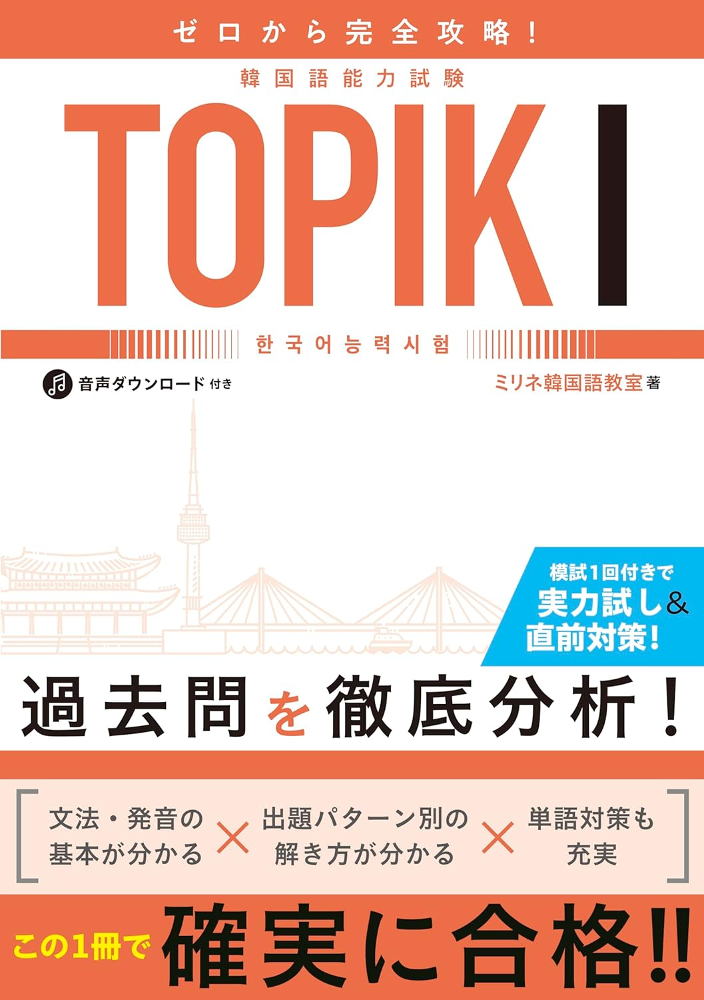
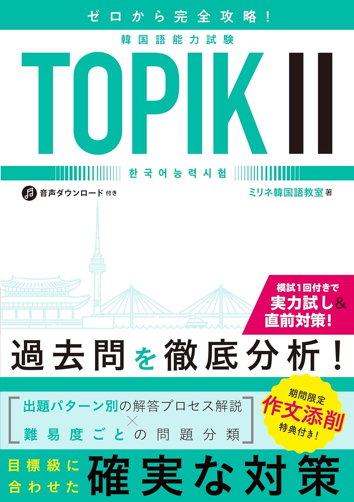
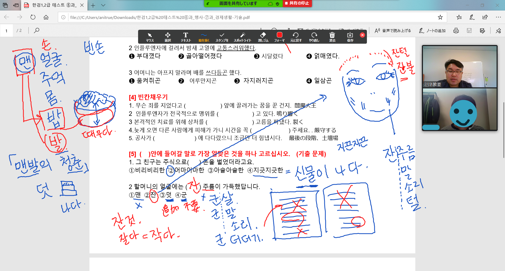
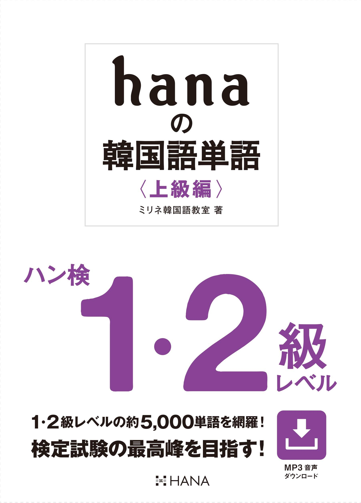

ミリネ重要レッスン
ミリネ重要レッスンのコンテンツ部分
試験時間内に問題が解けるようにトレーニングするコースです。
「TOPIKⅠオンライン初級(1・2級)対策」
◆ ミリネのオンライン初級(TOPIKⅠ)対策講座の受講ポイント
| 目標 | 1.TOPIKⅠの高頻出語彙をマスターする。 |
|---|---|
| 2.試験問題が解くための初級文法のまとめ。 | |
| 3.読解問題と聞き取り問題に慣れる。 | |
| 4.模擬試験で弱点を把握する。 |
| 詳細 | 1.TOPIKⅠを初めて受ける方にどのような問題が試験に出るのかを提示し、勉強方法や学習要領について解説します。 |
|---|---|
| 2.読解問題を早く読みこなせるようにするため、受講期間中は頻出初級単語を覚え、確認のテストを毎回行います。 | |
| 3.聞き取り問題に出てくる単語や表現のパータンを示し、試験に慣れるよう訓練します。 |
| 分野 | 1級評価基準 |
|---|---|
| 全般 | ・自己紹介、買い物、飲食店での注文など生活に必要な基礎的な言語(ハングル)を駆使でき、身近な話題の内容を理解、表現できる。 ・約800語程度の基礎的な語彙と基本文法を理解でき、簡単な文章を作れる。 ・簡単な生活文や実用文を理解し、構成できる。 |
| 聞取り | 日常生活と関連する個人的な対話や談話を聞き、内容を把握し、推論できるかを評価する。 |
| 読解 | 日常生活や日常的な公共の場で普段使用する語句、文章、短い文などを読み情報を把握し、意味を理解できるか評価する。 |
| 分野 | 2級評価基準 |
|---|---|
| 全般 | 日常生活と関連する個人的な対話や談話はもちろん、社会的テーマを扱う対話や談話を聞き、その内容を把握し、推論できるかを評価し、簡単な実用文を理解できるかを評価する。 |
| 聞取り | 電話やお願い程度の日常生活に必要な言語（ハングル）や、郵便局、銀行などの公共機関での会話ができる。 約1,500～2,000語程度の語彙を用いた文章を理解でき、使用できる。 公式的な状況か非公式的な状況かの言語（ハングル）を区分し、使用できる。 |
| 読解 | 日常生活と関連する生活文や説明文を読み、その内容を把握でき、実生活で頻繁に接する簡単な広告文や案内文などの実用文を読んで情報を把握できるか評価する。 |
『詳細』
特徴
❶読解パートの過去問題を徹底分析
❷過去問を解きながら、攻略のポイントを解説
❸過去問に出た語彙と表現のまとめを使ってテスト
❹合格のための聞き取り対策
❺授業後、授業動画を見て復習（毎週授業を録画し、お送りします。欠席時も安心！）
対象
TOPIK1~2級：語彙・読解対策・聞き取り対策
人数
2～8人
日程
| 曜日 | TOPIK | 場所 | 時間 |
|---|---|---|---|
| 土曜日 | 1,2級 | オンライン | 10時～12時(１コマ、50分) |
| 今回は募集しません | |||
テキスト
ミリネ韓国語教室著
『ゼロから完全攻略！ 韓国語能力試験 TOPIK I』

内容
| 聞き取り | 読解 | 頻出語彙(課題) | |
|---|---|---|---|
| 概要説明(初級文法総まとめ) | 概要説明(初級文法の整理) | ||
| 1週目 | 基本パターン１質問への返答を選ぶ❶ [問1-2] 基本パターン２質問への返答を選ぶ➋ [問3-4] |
基本パターン１何についての文か選ぶ [問31-33] | ㄱ(과일 가게에서 사과를 샀습니다) ~ㄴ(날씨가 좋으니까 밖으로 나가고 싶어요) |
| 2週目 | -基本パターン３会話に合う返答を選ぶ [問5-6] 基本パターン４会話の場所を選ぶ [問7-10] 基本パターン５会話のテーマを選ぶ [問11-14] |
基本パターン２ 空欄に合う単語を選ぶ [問34-39] 基本パターン３ 絵の内容に合わないものを選ぶ [問40-42] |
ㄷ(오늘 일은 다 끝났어요) ~ㅂ(어제 산 구두가 작아서 바꿨어요) |
| 3週目 | 基本パターン6 会話に合う絵を選ぶ [問15-16] 応用パターン１会話から分かることを選ぶ [問17-21] |
基本パターン４ 短文の内容と同じものを選ぶ [問43-45] 基本パターン５ 短文の中心となる内容を選ぶ [問46-48] 応用パターン１ 筆者自身に関連する文を読んで答える① [問49-50] 応用パターン２ 説明文を読んで答える① [51-52] |
ㅅ(사무실에서 사람들이 일을 하고 있어요) ~ㅇ(아까 무슨 말씀을 하셨어요?) |
| 4週目 | 応用パターン2 会話から分かることを選ぶ [問22-24] 応用パターン3 会話から分かることを選ぶ [問25-26] |
応用パターン３ 筆者自身に関連する文を読んで答える② [問53-54] 応用パターン４ 場所に関する文を読んで答える [問55-56] 応用パターン５ 文を並べ変える [57- 58] |
ㅈ(처음 오셨으니까 자기소개를 해 주세요) ~ㅉ(찌개가 짜면 물을 더 넣으세요) |
| 5週目 | 応用パターン４日常会話を聞いて選ぶ [27-28] | 応用パターン６ 筆者自身に関連する文を読んで答える③ [問59-60] 応用パターン７ 筆者自身に関連する文を読んで答える④ [問61-62] 応用パターン８ メールや掲示板の内容を読んで答える [問63-64] |
ㅊ(식사 후에 차를 마십시다) ~ㅎ(가을 하늘은 높고 파랗습니다) |
| 6週目 | 応用パターン5 インタビューを聞いて答える [問29-30] | 応用パターン９ 説明文を読んで答える② [問65-66] 応用パターン１０ 説明文を読んで答える③ [問67-68] 応用パターン１１ 筆者自身に関連する文を読んで答える⑤ [問69-70] |
高頻度出題語彙ー問題を通じて暗記確認❶ |
| 7週目 | 1回模擬試験・解説 間違えた問題をもう一度整理,復習 |
1回模擬試験・解説 間違えた問題をもう一度整理,復習 |
高頻度出題語彙ー問題を通じて暗記確認❷ |
| 8週目 | 2回模擬試験・解説 | 2回模擬試験・解説 | 高頻度出題語彙ー問題を通じて暗記確認❸ |
授業料
| 回数 | 授業料(税抜) | 税込 |
|---|---|---|
| 8回 | 2,980円 x 2コマ x 8回= 47,680円 + 税 | 52,448円 |
募集期間
今回は募集しません
生徒の声
2019年10月TOPIKの対策講座の感想| K様 |
|
計8回の講座でしたが先生にとても熱心に教えていただきありがとうございました。 独学でコツコツやっていましたがやはり教えていただくと自分が何ができるのかできないのかがハッキリ分かりとても良かったです。 宿題もたくさん出て仕事との両立で大変でしたが今思うとあの宿題が自分の挑戦の励みになったと思います。 試験を受けるのは初めてで不安しかありませんでしたが先生の暖かい言葉で落ち込むのが最小限に抑えられたと思います。 後は緊張せず落ち着いて試験に臨めたらいいなと思います。 短い間でしたがありがとうございました。 結果はどうあれいっぱい勉強できたことに感謝いたします。 |
| K様｜2017.4 |
|
TOPIKの初級対策の6回コースを受講しました。ありがとうございました。 最初はかなり悲惨な韓国語力でご迷惑をおかけしましたが、毎週単語テスト、 苦手な文法の説明TOPIKの問題形式の分析などのおかげで徐々に自信がつくようになりました。 TOPIKはもちろん、それ以外の内容（例えば発音など）も細かく教えて頂いたので韓国語力自体も鍛えて頂きました。 来週のテスト、頑張って受けてきます。結果報告します。 ありがとうございました。 |
| T様｜2017.2 |
| 試験問題の解き方のポイントが分かって良かったです。 (時間内で、知らないたんがある場合など) 改めて、単語を覚えていない(知らない、忘れている)ことが分かったので、勉強しなくては思いました。→単語の覚え方も教えてもらえて良かったです。 |
| K様｜2017.2 |
| 全くTOPIKの対策を知らずに参加してしまったのですが、全体の構成や解き方のコツがわかりました。 自分に足りないところ、苦手な部分も分かったので、勉強していく方向が見えた気がします。감사합니다. |
『TOPIKオンライン中級(3・4級)対策』
◆ ミリネの中級(TOPIKⅡ-3・4級)対策講座の受講ポイント
| 語彙力強化 | 作文対策 | |
|---|---|---|
| 詳細 | TOPIKⅡの中級必須単語(形容詞・副詞・動詞・漢字語)の単語リスト配布 | 作文の基礎固め 51番～54番の攻略ポイント解説 |
| 毎週単語テスト実施 講師による丁寧な解説で単語の定着を図る |
毎週、講師による作文添削実施 |
| 分野 | 3級評価基準 |
|---|---|
| 全般 | 日常生活を問題なく過ごせ、様々な公共施設の利用や社会的関係を維持するための言語（ハングル）使用が可能。文章語と口語の基本的な特性を区分し理解、使用が可能。 |
| 聞取り | 個人的な談話や非常に身近な、平凡な社会的テーマを扱う対話や談話を聞き、内容を把握し、推論できるかを評価する。また、広告やインタビュー、天気予報などの実用談話を聞き、大まかな内容を把握し、推論できるかを評価する。 |
| 読解 | 基本的な社会生活を維持するために必要な文章、身近な社会・文化などを扱う簡単なテーマの文面を読んで、その内容を理解し、推論できるかを評価する。また、簡単な広告、案内文などの実用文を読んで情報を把握し、文章の主な内容や細かい内容を推論できるかを評価する。 |
| 書取 | 身近な社会的テーマの説明文や感想文を段落単位で比較的正確且つ適切に校正できるかを評価し、日常的な脈絡と関連する個人的テーマにおいての実用文を格式に沿った記述ができるかを評価する。 |
| 分野 | 4級評価基準 |
|---|---|
| 全般 | 公共施設の利用や社会的関係の維持に必要な言語（ハングル ）機能を遂行することができ、一般的な業務に必要な機能を実行できる。 ニュースや新聞をある程度理解でき、一般業務に必要な言語（ハングル）が使用可能。 よく使われる慣用句や代表的な韓国文化に対する理解をもとに社会・文化的な内容の文章を理解でき、使用できる。 |
| 聞取り | 社会的な関係維持に必要な一般的な社会的・抽象的なテーマを扱う対話や談話、そして、比較的平凡な内容のニュースや討論を聞き、内容を把握し、推論できるかを評価する。 |
| 読解 | 社会生活に必要な文、経済・社会・文化の分野におけるテーマの文章を読んで内容を理解し、推論できるかを評価する。感想文、使用説明書、案内文、説明文、新聞記事、随筆などを読んで情報を把握し、内容を推論できるかを評価する。 |
| 作文対策 | 社会的な脈絡と関連する一般的または身近な社会的テーマの説明文や感想文を段落単位で正確且つ適切に構成できるかを評価する。 |
『詳細』
特徴
❶読解・聴解パートの過去問を徹底分析、攻略ポイントを解説
❷過去問に出た語彙・表現リストを用い、毎週単語テスト実施
❸高得点獲得のための作文対策、講師による作文添削
対象
TOPIK3~4級：語彙・読解対策・作文対策
人数
2～8人
テキスト
ミリネ韓国語教室著
『ゼロから完全攻略！ 韓国語能力試験 TOPIK II』

日程
| 曜日 | TOPIK | 場所 | 時間 |
|---|---|---|---|
| 土曜日 | 3,4級 | オンライン | 16時～18時(１コマ、50分) |
| 土曜クラス｜ ❶5/24(*1回目だけ18時～20時) ❷5/31 ❸6/7 ❹6/14 ❺6/21 ❻6/28 ❼7/5 ❽7/12 |
|||
内容
| 読解 | 作文対策 | 聞取り | |
|---|---|---|---|
| 1週目 | ＜問題1- 8 対策＞ 基本パターン① 空欄に入る適切な語彙を選ぶ 基本パターン② 下線部と意味の似ている表現を選ぶ 基本パターン③ 広告や案内文の内容を選ぶ |
作文対策 ①한다体(文語体)の練習 ②한다体(文語体)で気を付けること ③基本的な原稿用紙の使い方 ④分かち書きの基本ルール ⑤接続詞 ⑥評価基準 |
|
| 2週目 | ＜問題9- 15 対策＞ 基本パターン④ 案内文やグラフの内容に一致する文を選ぶ 基本パターン⑤ 新聞記事の内容に一致するものを選ぶ 基本パターン⑥ 4つの文を正しい順番に並べる |
51番問題対策 (パターン①) |
|
| 3週目 | ＜問題16-22 対策＞ 基本パターン⑦ 文脈に合うように、空欄に入る表現を選ぶ① 基本パターン⑧ 説明文の内容に一致する文を選ぶ 基本パターン⑨ 説明文の中心となる考えを選ぶ |
52番問題対策 (パターン②) |
|
| 4週目 | ＜問題23- 31 対策＞ 基本パターン⑩ 日記やエッセイに出てくる人物の心情や態度を選ぶ 応用パターン① 新聞記事の見出しを説明した文を選ぶ 応用パターン② 文脈に合うように、空欄に入る表現を選ぶ② |
53番問題対策 (パターン③) |
|
| 5週目 | ①51番作文練習 ②53番作文練習 |
＜問題1- 8 対策＞ 基本パターン① 対話の内容に合う絵を選ぶ 基本パターン② 話者が説明する内容に合うグラフを選ぶ 基本パターン③ 対話の後に続く言葉や場所を選ぶ |
|
| 6週目 | ①52番作文練習 ②54番問題対策 (パターン④) |
＜問題9-20 対策＞ 基本パターン④ 対話の後に続く行動を選ぶ 基本パターン⑤ 話される内容と一致するものを選ぶ 基本パターン⑥ 対話で話者の中心となる考えを選ぶ |
|
| 7週目 | 54番作文練習 (400字～500字の作文練習） |
＜問題21- 26 対策＞ 応用パターン① 対話で話者の中心となる考えを選ぶ② 応用パターン② 対話で話者が何をしているかを選ぶ 応用パターン③ インタビューで話者の中心となる考えを選ぶ |
|
| 8週目 | 54番作文練習 (600字～700字の作文練習) |
＜問題27- 32 対策＞ 応用パターン④ 対話で話者の意図を選ぶ 応用パターン⑤ 専門家へのインタビューで話者が誰なのかを選ぶ 応用パターン⑥ 討論で発言者の考え、態度を選ぶ |
授業料
| 回数 | 授業料(税抜) | 税込 |
|---|---|---|
| 8回 | 2,980円 x 2コマ x 8回 = 47,680円 + 税 | 52,448円 |
募集期間
5/22(水)
生徒の声
2022年4月TOPIKの対策講座の感想| 関東在住 |
| zoomでのグループ授業を初めて受けたので、非常に緊張してしまい、他の受講者の方にご迷惑をかけてしまったと思うと申し訳ない気持ちです。最終回の作文は文字数を数えず大きなミスをしてしまいました。 そういう状況ではありましたが、たくさん刺激をいただき感謝しています。先生も大変誠実に授業を進めてくださり、なんとかついていくことができました。心から感謝申し上げます。 2011年に入門して、努力不足で進歩していなかった韓国語ですが、今回思い切って受験することを決め、少しですが前に進めたと感じています。 |
| 近畿在住 |
| グループレッスンでは皆さんが基本ミュートにされていた方がいいなと思いました。先生の方で設定・解除ができると思うのでデフォでいいと思います。 5１，５２，５３，特に５４番はネットや対策本では難しいカタい書き方の見本ばかりでハッキリ言って中級レベルの人間には参考にならないのですが、 今回のグループレッスンで同じレベルの他の人の作文で自分が使える書き方、言い回しを見ることができ、 先生も皆さんんの添削を通して教えてくださって知ることができて勉強になりました。 |
| 関東在住 |
| とてもテンポの良い授業で、いつも２時間あっという間でした。解説も丁寧で分かりやすく、諦めることなく勉強できました。ありがとうございました。 |
| S様 |
|
今回の講座は51-54までまんべんなく学ぶことができたため、試験に少し慣れることができました。特に53番は今までで1番早く解けるようになったと感じています。54番はとにかくできるところまでやってみようと思います…。
講座を通してやはり定期的に問題を解いていかないと感覚がにぶていくと分かりましたので、次回のテスト前にはもっと多くの問題を解いて準備したいです。単語も足らず表現の幅も足りていないと、アラカワさんと文章を比較して苦しんだ全7回でした。 |
| A様 |
|
作文問題51-54番をていねいに解説していただき、とても参考になりました。
例えば52番は本文中にヒントがあること、53番は提示されたデータを全て書くこと、そして、書く時にも順番やコツがあるということです。 試験本番では、いつも時間が不足していますが、今回習ったポイントをきちんと押さえれば大丈夫な気がしてきました。 読解について、詳しくやって欲しい点もありましたが、次の機会があればその時お願いします。 試験頑張ります。 |
| s様｜2018.4 |
|
単語や文法を覚えるために、少し無理矢理TOPIKⅡに申し込みましたが、 ライティングを一人で勉強するのに何からしていいのかわからず、この講座を受けました。 たまたま一人のクラスだったこともあり、本当に丁寧に教えていただきました。 特にキム・ジュンヨプ先生の授業は説明がとてもわかりやすく、毎回この文章だと何点ぐらい取れると教えてもらえたので 励みになりました。 明日のTOPIKに合格できるかわかりませんが、今回の講座で色々な表現を学ぶことができたので、 これからもTOPIKに限らず、勉強を続けていこうと思います。ありがとうございました。 |
| O様｜2017.4 |
|
저는 토픽 시험 중에서 쓰기가 가장 걱정이었습니다.
이 수업은 쓰기를 집중적으로 연습할 수 있어서 저한테 큰 도움이 됐습니다.
다음주가 드디어 시험이니까 지금까지 배운것을 활용해서 열심히 하겠습니다. 차근차근 가르쳐 주셨던 김 선생님께 많은 감사를 드리겠습니다. |
「TOPIKオンライン上級(5・6級)対策講座」
◆ ミリネの上級(TOPIKⅡ-5・6級)対策講座の受講ポイント
| 時事単語など語彙力強化 | 作文対策 | |
|---|---|---|
| 詳細 |
TOPIKⅡの上級必須単語(形容詞・副詞・動詞・漢字語) 1000個→125個 x 8週 |
2回 51,52番問題を攻略する |
| 毎週単語テスト実施 | 2回 53番問題を攻略する | |
| 講師による丁寧な解説で単語の定着を図る | 6回 54番問題を攻略する |
| 分野 | 5級評価基準 |
|---|---|
| 全般 | 専門分野においての研究や業務に必要な言語（ハングル）をある程度理解と使用ができ、政治・経済・社会・文化などの全般に渡った身近なテーマについて理解し、使用できる。 公式的、非公式的且つ口語、文語的な脈絡に関する言語（ハングル）を適切に区分し、使用できる。 |
| 聞取り | 一般的な業務遂行分野における対話や経済・社会・文化などの専門分野に関する一般的な対話や談話、身近なテーマの講演や対談を聞き、内容を把握し、推論し、時に批判的な理解が可能であるかを評価する。また、祝辞や弔辞など特殊な状況においての談話を聞き、おおよその内容を把握し、推論できるかを評価する。 |
| 読解 | 社会生活を巧みに遂行するために必要な文、一般的な業務遂行に関連する文章を読んで内容を理解し、推論でき、批判的な分析ができるかを評価する。政治・経済・社会・文化・科学など多様なテーマの説明文、記事、建議文を読んで理解でき、小説、詩などの文学作品を読んで作者の態度を把握できるか評価する。 |
| 作文対策 | 社会的、抽象的なテーマまたは業務や専門分野と関連する論述文を比較的正確で適切に構成できるかを評価する。 |
| 分野 | 6級評価基準 |
|---|---|
| 全般 | 専門分野における研究や業務遂行に必要な言語（ハングル）機能を比較的正確に、流暢に使用でき、政治・経済・社会・文化などの全般的なテーマにおいて身近でないテーマに対しても不便なく使用できる。 ネイティブ程度までではないが、自己表現を問題なく話すことができる。 |
| 聞取り | ほとんどの業務遂行に必要な対話や政治・経済・社会・文化・教育などの専門分野に関わる、多少深度の深い対話や談話、また、複雑な講演や演説、対談を聞き、内容を把握できるか推論し、批判的な理解ができるかを評価する。 |
| 読解 | ほとんどの業務遂行に関連する文、専門的な文章を読んで、その内容を把握し、推論でき、批判的に分析できるかを評価する。小説、民謡、評論などを読んで作家の意図、心理などを把握できるかを評価する。 |
| 書取 | 社会的、抽象的なテーマまたは業務や専門分野と関連する論述文を正確で適切に構成できるかを評価する。 |
『詳細』
特徴
❶読解パートの過去問題を徹底分析
❷過去問を解きながら、攻略のポイントを解説
❸過去問に出た語彙と表現のまとめを使ってテスト
❹高得点獲得のための作文対策
❺授業後、授業動画を見て復習（毎週授業を録画し、お送りします。欠席時も安心！）
対象
TOPIK5~6級：語彙・読解対策・作文対策
人数
2～8人
テキスト
ミリネ韓国語教室著
『ゼロから完全攻略！ 韓国語能力試験 TOPIK II』
日程
| 曜日 | TOPIK | 教室 | 時間 |
|---|---|---|---|
| 日曜日 | 5,6級 | オンライン | 10時～12時(１コマ、50分) |
| 日曜クラス｜❶5/25 ❷6/1 ❸6/8 ❹6/15 ❺6/22 ❻6/29 ❼7/6 ❽7/12(土) *8回目だけ土曜日10時～12時 |
|||
内容
| 読解 | 作文対策 | 聞取り | |
|---|---|---|---|
| 1週目 | ＜問題16-22 対策＞ 基本パターン⑦ 文脈に合うように、空欄に入る表現を選ぶ① 基本パターン⑧ 説明文の内容に一致する文を選ぶ 基本パターン⑨ 説明文の中心となる考えを選ぶ |
❶評価基準 ❷文の類型を学ぶ ❸54番作文問題の宿題 |
|
| 2週目 | ＜問題23- 31 対策＞ 基本パターン⑩ 日記やエッセイに出てくる人物の心情や態度を選ぶ 応用パターン① 新聞記事の見出しを説明した文を選ぶ 応用パターン② 文脈に合うように、空欄に入る表現を選ぶ② |
❶54番作文問題の宿題添削及びポイントを抑える ❷54番作文問題の宿題 |
|
| 3週目 | ＜問題32- 39対策＞ 応用パターン❸ 説明文の内容に一致する文を選ぶ 応用パターン❹ 文の主題を選ぶ |
❶54番作文問題の宿題添削及びポイントを抑える ❷54番作文問題の宿題 |
|
| 4週目 | ＜問題40-50対策＞ 最上級パターン① 長文問題：小説 最上級パターン② 長文問題：説明文・評論文① 最上級パターン③ 長文問題：説明文・評論文② |
❶54番作文問題の宿題 ❷51番問題過去問①ー② 練習問題①～④及びポイントを抑える ❸52番問題の宿題 |
|
| 5週目 |
❶51番問題の過去問解説①,② ❷51番問題の練習①ー④及びポイントを抑える ❸52番問題の過去問解説①,② ❹52番問題の過去問解説①ー④及びポイントを抑える |
＜問題21- 26 対策＞ 応用パターン❶ 対話で話者の中心となる考えを選ぶ② 応用パターン❷ 対話で話者が何をしているかを選ぶ 応用パターン❸ インタビューで話者の中心となる考えを選ぶ |
|
| 6週目 | ❶53番グラフ・図表作文問題の解説 ❷53番グラフ・図表作文問題の練習 ❸54番作文問題の宿題 |
＜問題27- 32 対策＞ 応用パターン❹ 対話で話者の意図を選ぶ 応用パターン➎ 専門家へのインタビューで話者が誰なのかを選ぶ 応用パターン➏ 討論で発言者の考え、態度を選ぶ |
|
| 7週目 | ❶54番作文問題の宿題添削及びポイントを抑える ❷54番作文問題の宿題 |
＜問題33-38,41-42 対策＞ 最上級パターン❶ 講演① 最上級パターン❷ 現場での演説 最上級パターン❸ 教養プログラム |
|
| 8週目 | ❶54番作文問題の宿題添削及びポイントを抑える ❷쓰기の総合的なまとめ |
＜問題39-40,43-50 対策＞ 最上級パターン❹ 対談 最上級パターン➎ ドキュメンタリー 最上級パターン➏ 講演② |
授業料
| 回数 | 授業料(税抜) | 税込 |
|---|---|---|
| 8回 | 2,980円 x 2コマ x 8回 = 47,680円 + 税 |
52,448円 |
募集期間
5/21(水)まで
生徒の声
2022年4月TOPIKの対策講座の感想| 関東在住 |
| とても良かったです。先生の授業がていねいで、分かりやすかったです。 |
| 九州沖縄在住 |
| 常に類語や出題頻出の高いなどの情報も添えて教えてくださったので良かったです。 |
| 近畿在住 |
| 毎回提出した作文の添削が丁寧で、だんだん楽しさが感じられるようになってありがたかった。 |
| I様 |
|
TOPIKⅡでどのような問題が出ろのか、どのように解答したら良いのかを丁寧に説明いただき、とても勉強になりました。 難しかったのですが、受講に得たものが沢山ありましたので、復習をしっかりやって受験したいと思います。 充実した教材も作成していただき、ありがとうございます。 |
| Y様 |
|
問題の解き方にそれぞれコツがあり、それに対してどのように解けば良いのか わかりやすく説明があり、試験対策に十分役にたつ授業でした。 少し時間がたりないと感じたので、もう少し時間によゆうがあればもっと良かったと思います。 問題もけっこうありましたがしっかり見ていただいてどこがどう違うのかの説明があり、大変わかりやすかったです。 |
| Y様 |
| 全６回のTOPIK講座に参加してとても勉強になりました。問題を解くコツや方法をわかりやすく教えて頂きとても参考になりました。 ありがとうございました。 |
| M様 |
|
大変遅くなり申し訳ごさまいません。
TOPIK対策では お世話になりありがとうございました。
しばらく 韓国語から遠ざかっていましたが 朴先生の 的確なアドバイスで 感が 戻ってきたような気がします。 この講座の良かった点は やはりマンツーマンでしたので 自分の弱点が誤魔化す事なく明確に分かった所です。 作文も自己流で書いていた文を パターン化する作業を体感できたのは 実際に対面で授業を聞いたからだと思います。毎回2時間があっというまで 効率良く授業が受ける事ができました。 自己学習時間が 足りないので 目標にはまだ 難しいかと思いますが 引き続きもう少し頑張っていきたいと思います。 最後になりましたが こちらの我儘を聞いて頂き ありがとうございました。 これから夏本番ですが皆さま ご自愛くださいませ。 |
| O様 |
|
これまで쓰기のせいでTOPIK6級を」とれていなかったので、1回しっかり学んでみようと思い受講しました。 6回という少ない回数でしたが作文の構成の作り方、使った方がいい文法、何を書いたらいいか、わからない時無難に書く方法など、独学ではわからなかった知識をたくさん教えてもらえました。 テストまであと少しですが、学んだことを生かして自分でも復習し今度こそ6級とれるように頑張りたいです。ありがとうございました。 |
| N様 |
|
1対1でしっかり教われたのがよかったです。高級レベルの授業を過去にあまり受けたことがなかったので、文法や言葉の使い方を知ることができたことも助けになりました。 書いて添削をするので自分の間違いやすい癖や間違って覚えていたことなどを指摘いただき、今後の言語習得にも役に立ちました。 短い間でしたが、お世話になりました。ありがとうございました。 |
| M様 |
|
他の教室や作文対策講座と違う点は私の書いた文をその場でタイピングして下さり、 それを基に＜添削＞として直して下さるので比較しやすかったです。 書いた作文を否定される今までの教室とは全く違って書いた物の文法修正をその場で説明しながら、 添削して下さるので理解できました。今まで通信添削なども試みたときは、伝わらない点も多々ありましたが 今回受講して自分の書き方に変化がでてきた様に思えます。ありがとうございました。 |
| H様 |
|
こちらこそ、遅くまでありがとうございました。 3コマずつ4日間、とても新鮮であり、充実していました（╹◡╹） 1人でテキストに向かっていて、途方に暮れていたところを、優しく導いて下さり、感謝致します。 後は、先生に教えて頂いた事をどこまで自分のものに出来るかだと思います。 3週間、体調管理、時間管理に留意して、初めてのTOPIK2を受けようと思います。 ありがとうございました😊 |
| T様 |
|
ＴＯＰＩＫ作文講座を受講しました。自分の答案だけではなく、他の受講生の方の
答案も見ることでより深く勉強になりました。 仕事が忙しく、受講日以外では宿題しかできなかったのですが、苦手だった作文が少し好きになれた気がします。ありがとうございます。 |
| N様 |
|
作文の構成について、よくわかりました。グレープで行ったこともよかった点です。 また、時間の中で書けるかどうかわかりませんが、練習を続ければできそうな気になりました。 |
| T様 |
|
独学では練習することできない表現や作文の展開方法を効率的に学ぶことが出来て良かったです。ありがとうございます。 また박다정 선생님から学びたいと思います。（テスト後でも継続して勉強を続けるとしたら） -受講後 10月に受けたTOPIKですが、目標としていた5級に無事合格しました！！！ 点数は以下の通りです。 スギ 58点 トゥッキ 70点 イルキ 70点 合計 198点 スギですが、マムリを書き始めたところで時間切れになってしまいましたので、6級に向けてはもっと早く書くことが課題ですね。 ですが合格は合格！私はこれまで万年4級止まりだったので、こうしてやっと「高級レベル」へ「昇格」できたのも一重にパク先生の体系的で要点を的確に捉えたご指導のおかげです。 パク先生の授業を受けて本当に良かったです。 本当にありがとうございました！！ |
| N様 |
|
読解のポイントをなることろを集中的に考えていただいたので、時間は短くなりました。 単語の意味や表現がわかればもっとわかるようになるとお思います。 作文や普段から話題になっていることに関心を持っていなかったので、内容を考えるのに時間がかかることがわかりました。まだまだ先は遠いようです。 |
| T様 |
|
・읽기 今回講座を受講して良かったこと。 読む順番が前より理解できるようになった。大切な直接詞がわかった。 ex. 그러나, 즉, 따라서 ・쓰기 構成の大切さ、文法の間違い、助詞の使い方が整理出来た。 大変お世話になり有難うございました。あと一週間ですが復習します。 受講して良かったです。 |
| S様 |
|
드디어 TOPIK 6급에 붙었습니다. 네번 고급시험을 보고 겨우 꿈이 이루어졌어요. 좋은 소식을 얼려 드릴 수 있게 되어 정말 기쁩니다. 점수는 지난 번 보다 어휘와 문법이 20점이상 올라갔고 쓰기도 약10점 올라 갔어요. 이것이 바로 미리내에서 수업 때 마다 예문연습을 많이 한 턱분이지요. 한편 듣기와 읽기는 지난 번과 거의 차이가 없었습니다. 듣기 시험은지난 번까지보다 쉬웠다는 느낌이 들어 기대하고 있었는데 조금 낙담했어요.역시 듣기와 읽기는 좀 더 시간을 걸어서 차분히 공부해야되네요. 첫번째와 두번째 수업 날에는 많이 눈이 오고 중간에는 재자신과 식구들이 독감에 결려서 힘든 일이 많았지만 이들은 좋은 추억입니다. 대책반에서는 하나의 것뿐만아니라 이에 관련하는 것도 같이 기르쳐 주셨으니 수업의밀도가 아주 짙고 재미있었어요. 요즘 일이 바빠졌고 집에서 맘대로 한국어 공부를 할 수가 없지만, 하기나 추기 집중 강좌가 열릴 때 다시 미리내에서 공부하고 싶다고 생각합니다. （日本語訳） ついに6級に合格しました。高級の試験を4回受けて、やっと夢が叶いました。良い報告が出来るようになって本当に嬉しいです。 点数は前回よりも「語彙及び文法」が20点以上アップ、「書取り」も約10点ほどアップしました。これがまさに、ミリネでレッスンのたびに例文練習をたくさんやったおかげです。一方、「聞き取り」と「読解」は前回とほとんど差がありませんでした。「聞き取り」の試験は前回までよりも簡単だったような気がして期待していたため、落ち込みました。やはり「聞き取り」と「読解」はもう少し時間をかけてじっくりと勉強しないとならないですね。 初回と2回目のレッスンの日には大雪が降り、途中、私自身と家族がインフルエンザにかかって、大変なことが多かったですが、これらのことも良い思い出です。 対策クラスでは、ひとつのことだけではなくて、関連したも事についても教えてくださったので、レッスンの密度が大変濃くて面白かったです。 最近は仕事が忙しくなってしまい、家で思いどうりに韓国語の勉強ができませんが、夏か冬の集中講座が開かれる時に、ミリネで学びたいと思います。 |
「2025年ハングル検定1級・2級対策講座」
| 特徴 |
|---|
| ❶語彙強化 ・トウミの語彙が覚えられるよう、ミリネが例文を準備し、宿題を出します。 ・毎回覚えられたかの確認をするため、テストをします。 |
| ❷試験に慣れる ・試験形式の類似問題をたくさん解きます。 |
| ❸覚えづらい単語、似た単語は絵や画像を見せるなどにして記憶に残るようにします。 |
詳細
| 授業について | ハン検上級合格のカギは何といっても語彙！ 語彙力を強化し、ニュアンスの違いをしっかりと学べる講座を作りました。 語彙は覚えるしかありません。
宿題でしっかり覚えたことを、授業で確認します。 なかなか覚えられない語彙や慣用句などはネイティブがしっかりケアします。 ❶類型別問題の対策と解答のポイントを詳しく解説します。 ❷レベル別の語彙や文法事項、発音、漢字等を分かりやすくまとめます。 ❸出題内容を体系的に把握し、試験準備が効率よくできるようにします。 |
|---|---|
| 対象 | ハングル検定1級・2級の合格を目指している方 |
| 目標 | ➊ １・２級トウミに出ている単語と例文を全て暗記します。 ➋ 授業中のテストで試験に慣れます。 ➌ 関連用語や慣用句、諺も覚えます。 |
| 授業の流れ | ❶ 次の授業までの２週間の間に宿題の語彙を覚えます。 ❷ 授業までに送られてきた課題を１０分で解いておきます。 ❸ 授業中に答え合わせをします。 ❹ 講師は語彙を覚えられるよう絵を描くなどして理解度を深める手助けをします。 ❺ 録画したものを後で送りますので、しっかり復習します。 欠席しても安心！ 한검대책 수업 동영상 일부1 (←クリックすると見られます) 한검대책 수업 동영상 일부2 (←クリックすると見られます)  イメージをクリックすると拡大できます。 |
| 日程 | ※2025年6月実施試験対策講座 2級 土:10時～12時 (各50分×2コマ) ❶1/25 ➋2/8 ➌2/22 ➍3/8 ➎3/22 ➏3/29 ➐4/12 ➑4/26 ➒5/10 ➓5/24 1級 土:12時～14時 (各50分×2コマ) ❶1/18 ➋2/1 ➌2/15 ➍3/1 ➎3/15 ➏3/29 ➐4/12 ➑4/26 ➒5/10 ➓5/24 |
| 定員 | 3～10人 |
| 教室 | オンライン(ZOOM) |
| 募集期間 | 2025年1月23(木) | テキスト |
 |
授業料
| コマあたり | 期間 | 授業料(税抜) | 税込 |
|---|---|---|---|
| 2,990円 | 10回 (1回×2コマ、5か月) | 59,800円 | 65,780円 |
生徒の声
2023年7月 1級合格者の声| 関東在住・1級 N様 |
|
ハングル能力検定（ハン検）の平均点・最高点数、出願者・受験者・合格者数がハン検協会のウェブサイトに公開されました。 2023年 秋季 第60回検定試験状況 1級の1次試験最高点が聞き取り＆書き取りで37点、筆記で52点、合計89点！ 合格率は受験者106人中20人の18.9％とのことで、稀に見る高得点かつ高合格率でした。 そして、今回はその合格者の中に私も含まれています！！ 2020年秋に初めて受けてから、途中に引っ越しで（2021年に兵庫から東京に引っ越しました！）準備できなかった回を除き、5回受けてやっと合格です。 これだけ合格者が多いということは、試験が簡単だったか、あるいは同志が皆レベルアップしてきているか。。。後者だと信じたいところです。 1次試験を5回受け、過去問も約5年分（10回分）を繰り返し解いた印象では、今回が特別簡単とは思いませんでした。 ここ数年で韓国語学習者の数は相当増えているようなので、周りの同志がかなり力をつけて試験に臨んでいるんだなと驚くばかりです。 さて、3年かけてようやく合格したハン検1級ですが、これまでにやってきたハン検対策を備忘録として残しておきます。 ■「語彙ゲー」攻略法 前回のブログでは過去問集と「ヨボセヨ！ハン検」を繰り返し解いたと書きました。 どちらも非常に大切な教材ですが、ただ解くだけでは教材活用度50％かなと後に感じました。 ハン検1級はいわゆる「語彙ゲー」です。 過去問は3周ほどすれば問題と正解をだいたい覚えてしまい、問題文をきちんと読まなくても答えが浮き上がって見えてきます。 しかし、それでは通用しないのがハン検1級です。私はどの回も通算10～15周ぐらい解きましたが、頻出語彙は繰り返し「形を変えて」登場します。 聞き取りで登場した語彙が何回か後の試験では翻訳で登場、ということも多いわけです。 聞いて意味が分かるだけでは完全ではなく、当然ながら「日韓両方で」「聞けて」「理解して」「書けて」初めてその語彙を「習得した」といえます。 私もこれで数点落として70点に届かず（54回65点、56回61点、57回64点、58回68点）何度も涙しました。 たとえば、筆記では何度も登場していた「쏜살같이」という語彙が日韓翻訳問題で登場して、どうしても思い出せず書けなかったことがあります。 日常生活で登場頻度が低い語彙ほど、意識して日韓両方でチェックするようにしました。 「トウミ」も買いましたが、私にはなかなか使いづらい本でした。 私は高校大学受験では英語を武器に（他教科が弱すぎて）ギリギリで突破していました。 そのときも単語帳を使ったことはなく、長文読解に登場する語彙を文脈で理解することで語彙力を伸ばしていました。 トウミも単語帳なので私には難しく、ほとんど開かずに終わりそうです。 ■急がば「課金」 2022年夏、3回目の不合格でモチベーションはダダ下がり、合格への道も見えず、自分が韓国語のプロとして10年以上も活動しているのに合格できないことは精神的苦痛でもあり、 諦めたくはないけど勉強する意欲もなく、どうすべきか迷っていたところに運よくオンライン対策講座の情報を入手、既に開講してひと月以上が経っていましたが途中から追いかけて受講しました。 もともと、通訳案内士の試験対策も受験を決めたときから必要だと思う科目だけ（当時はソウルに住んでいたので）鍾路の時事日本語学院で対策講座を受講していたから一発合格できたことを思い出しました。 講座自体はもちろん、一緒に受験する同志の存在はモチベーション向上に不可欠です。独学でブログや動画を参考にして勉強する方法ももちろんアリですが、私は「課金派」です。 ただ、ハン検1級は最初の受験時はコロナ真っ盛りで対面授業はもちろんなし、オンラインも1級対策となるとかなり少なく、当時はうまく見つけられませんでした。 私は「ミリネ韓国語教室」の講座を教えてもらい、受講しました。 授業は隔週で、当日の朝にその日の授業で解説する内容の小テストがメールで配られ、授業前に解いてから授業で解説を聞くスタイルです。 受検者が間違えやすいものを先生が小テストにまとめてくれて、どうして間違いやすいか、どう対策すれば間違いにくくなるかを会話しながら解説してくれます。 小テストで同志は全員正解、私だけ不正解ということも多く、恥ずかしい思いをすると当然忘れにくくなります。恥の数だけ語彙力は伸びます！ 小テストの元ネタになる教材が「トウミ例文集」です。 「トウミ」は例文がないことがひとつの弱点になっていて、万人受けしない理由だと思います。 ミリネの「トウミ例文集」は「トウミ」の語彙をジャンルごとに再分類、そして全ての語彙に例文をつけてあるので覚えやすさが段違いでした。 近日発売予定の「hanaの韓国語単語〈上級編〉ハン検1・2級レベル」は、この「トウミ例文集」に近いものになるのでは？と期待しています。 hanaの韓国語単語〈上級編〉ハン検１・２級レベル | 韓国語のHANA 私にとっては覚醒ともいえるほど、この授業で語彙力が伸びました。 オンライン講座なので授業の動画で繰り返し復習できます。 平日は昼休みに事務所を出たら動画を回しっぱなしで、移動中は音声だけ聞いて復習していました。 結局、このときは1次試験で2点足りませんでしたが、もう少しで届きそうかなという希望が見えました。 その後も授業動画での復習と「トウミ例文集」を繰り返し、1次試験の3週間ぐらい前から過去問で実戦の感覚を思い出す作業をしておきました。 私が使った教材はこれだけです。 他にも良い教材は多いですが、たくさん持っていることよりも同じ教材を10周でも20周でも繰り返し「読んで」「見て」「聞いて」頭から抜け落ちないようにすることの方がずっと効率が良いと思います。 語彙力を伸ばすには一つひとつの語彙を「点」で覚えるのではなく、それぞれの語彙を関連付けて「点と点を線でつなぐ」ことで覚えやすさがかなり変わります。 何事も関連付けることは大切ですね。 ハン検1級語彙も類義語、反意語、ニュアンスの相違によるグループ化などで少しずつ広げていけば膨大な語彙も怖くありません。 過去のブログにも書いたとおり、私は韓国語を学んで3年でプロ通訳者としてデビューしましたが、3年間で業務に必要な最低限の語彙を取捨選択して 身に付けてきたため、韓国語のプロとしてはどうしても語彙力が弱点でした。 それでも業務にほぼ支障がなかったので、弱点に気づかず「自分は韓国語かなりできる！」と勘違いしていました。 ハン検1級対策では、その驕りを一度リセットして自分の技量を見つめなおす良い機会になったと思います。 ■2次試験は「音読」 めでたく1次試験に合格したので、そのまま2次試験対策に突入です。 2次試験は最初に自己紹介兼ウォームアップの雑談が数分あり、その後に問題文を1分で黙読、そして音読＆問題文に関する質疑応答の流れで行われます。 私は職業が通訳者で普段から韓国語を使っていて、最近は韓国出張もあって空き時間があれば友人らと食事に行くこともあるので、会話自体はそれほど苦になりません。 ただし、2次試験で使用するエッセイのような文章を読む機会はほぼないので、毎日一つ以上の社説やコラムを読みました。 過去問は試験前日と当日に3～4回練習しました。 社説やコラムで練習したからか、過去問は短くて易しく感じました。 私は読むのが速い方ではないので、1分間黙読と音読を重点的に練習しました。 黙読は、段落ごとにできるだけ速くポイントをつかむため、段落の最初の文だけを読んで最後までいったらまた最初から段落の最初の文とキーワードになりそうな言葉を探しながら最後までいく、を時間を測って繰り返しました。 音読は発音や抑揚、文章の流れを意識してできるだけゆっくり練習しました。 速く音読することは速くしゃべることと同じで外国語学習にはプラスになりません。 音読が遅くても試験では減点対象にならないので、文章の流れを損なわない程度に限界までゆっくり音読しました。 実際の試験では、途中に何度も登場する語彙を間違えて読んだかも！？という部分があり、焦って発音が多少ブレてしまいました。 ブレると内容が頭に入らず、質疑応答で内容のことを質問されても内容を思い出せず、これもけっこう焦りました。 そういうこともあるので、練習では全くブレなくなるまで同じ文章を繰り返し音読すべきですね。 合格者のブログより |
| 関東在住・２級 |
| 毎回たくさんの語彙を勉強することができて良かったです。 またレベルの高い方々と勉強できて、とても刺激になりました。 少し休んで、また受講したいです。 |
| 近畿在住・２級 |
| 先生の説明がきめ細やかでわかりやすく、楽しく授業を受けることができました。 まだまだ2級を受験するには実力が足りないので、授業についていくだけで必死でみなさんにご迷惑をおかけしましたが、 また語彙力を増やしてから再受講したいです。ありがとうございました。 |
| 関東在住・２級 |
| 今回の講座を受けて良かった点は圧倒的に語彙が増えたことです。同じ言葉でもどんなシュチュエーションの時に使うのか、使い分けも勉強することが出来ました。正直レベルが高すぎてついていくのに必死でしたが、たくさんの刺激を受けました。大変だったのは、範囲が広いので勉強の時間を捻出するのが大変でした。今回の講座を元に類義語をまとめたりして、自分の中に語彙を染み込ませられたらなと思います。 折角の例文集という宝物をこれからは音読して口から自然に出てくるようになるのが理想です。 |
| 関東在住・２級 |
| 問題文に出てきた単語の派生語や、同義語を例文を用いて教えてくれるので、とても良かったです。また、絵を描いて説明してくれるので、定着しやすかったです。とはいえ、難しい単語ばかりなので、復習と予習で溺れて吸収しきれなかったので、もう一度復習し直そうと思っていますが、語彙を増やすことができました。 最後に、助詞、文末表現も授業で扱ってくださるとうれしいです。 ありがとうございました。 |
| 四国在住・1級 |
| ちょっと引っかかる点を質問してもその場ですぐわかりやすく答えていただけるため、本当に助かりました。体力的には2時間が限界なのですが、分量としてはもっとやりたいなという気分です。 リピート受講するしかないですかね。 |
| 関東在住・1級 |
| 先生が優しく丁寧に、熱心に教えて下さって毎回刺激をいただいています。時間が足りなくて受講生同士が親しくなれる時間がないのが残念。同窓会を開いて下さい |
| 関東在住・1級 |
| 自分の弱点がよく分かり、受験までに何をすべきなのかが分かりました。私の場合は語彙力の中で特に擬態語擬声語や副詞、慣用句が苦手です。でも何より苦手なのはリスニング、特にパダスギ。これをなんとかしなければと思いました。授業のパダスギは本当に辛かったですが、とてもありがたかったです。今度受講する時までに練習を積みたいと思います。 |
| 中国在住・1級 |
|
■良かった点:
・テキスト(ㄱㄴㄷㄹ 順では無く分野別で、しかも全部例文付き！) ・課題(ハン検の出題形式に慣れることが出来た) ・解答の説明も、色々な角度からあり分かりやすくて、目からウロコが何枚も落ちました。 ・授業の動画(これは本当にありがたい！) ・独学かつ地方在住者には、他の受講者と知り合えてとても励みになりました。 ■悪かった点: ・私にとってレベルが高すぎた。授業が悪かった訳ではありません。私が、毎回範囲を訳すのに精一杯で覚えて定着させる余裕がありませんでした。授業の復習も思ったように出来ず消化不良のままでした。 リベンジの為、次次回で再受講したいと思っています。又よろしくお願いします。 |
| 関東在住・1級 |
| 細かいニュアンスの違いなどを質問できてよかった。 日本人が間違えやすい問題が入っていたのもよかった。 トウミの例文集が役立った。 |
| 近畿在住・２級 |
|
・ミリネでの講座は今までもお世話になっていたので、進め方には慣れていた。今までの集中講座では1週間くらい前に課題が送られてきて、じっくり準備することができたが、
今回は当日8時解禁だったので、かなり集中して取り組んだ。もし、準備なく受講した場合はスピードに追いつかないし、分からないまま進行していたと思う。
同意語までは理解できていないことが今後の課題。 ・トウミに記載されている意味とは違う説明をされることがあり戸惑った。また、その意味がどこに出ているのかをネーバー辞書、韓国語国語院辞書の両使いででもなかなか見つからなかった。 当然小学館韓日辞典は役に立たなかった。 ・受講と同時に、毎週範囲を決めてトウミの暗記を続けていたので、後半になってようやく課題が一通り解けるようになった。やはり、トウミの暗記が前提での講座だと思った。 |
| 九州在住・1級「結果報告」 |
| 本日、1級1次試験の結果が届き、聞き取り21点 筆記５２点 計７３点でぎりぎり合格していました。
聞き取りが撃沈したのにも関わらず合格できたのは、対策講座で語彙力を鍛えていただいたおかげです。 ありがとうございました。筆記問題の中に、講座で学習した単語がいくつもありました。 これから２次試験に向けて、またがんばります。 |
| 関東在住・２級 |
| 「感想」初めは難しくて頭がおかしくなりそうでしたが、覚えた単語が増えてくると授業を面白く感じるようになりました。頑張りましたが、トウミ全部を覚えることはできませんでした。
でも授業に出て来た語彙はノートを作って何度も復習したので、頭にしっかり定着しました。先生の説明が面白く分かりやすかったです。 「結果報告」 안녕하세요 선생님. 어제 무사히 한글검정 2급 시험을 봤어요. 듣기 문제가 하도 어려웠는데 필기 시험에서 그럭저럭 점수를 딸 수 있었어요. 선생님 덕분이에요. 감사합니다.마크 실수가 없으면 75점일 것 같아요. 언제가 될지는 모르겠지만 1급을 볼 때는 선생님 수업을 다시 받고 싶어요. 또 뵐 수 있을 때까지 열심히 공부하겠습니다. |
| 関東在住・２級 |
|
Zoomでの授業は初めてでした。過去には、短期集中講座や作文講座を受講しました。 短期集中講座では、内容が消化しきれなかった時もありましたが、オンラインでは後から授業内容をメールで送って下さり、復習に力を入れることができました。 2週間の間、最初の週は復習を、翌週は例文集を覚えるようにしたので、一定のペースで学習出来ました。 とはいえ、既に忘れてしまったものもあるので、もうひと通り例文集を復習した後にハン検を受けようと思います。 明確に自分の進歩を感じ取るのは難しいこの頃ではありますが、例文を書き写す際に、明らかに覚えられる量が増えました。 しかし、받아쓰기は自分の書く速さがあまりにも遅すぎて、聞いて理解して書くという一連の作業が全く出来ませんでした。日頃から練習をしていないとダメですね。 オンラインの授業は、余裕を持って受けられる反面、質問するタイミングが難しいと感じました。 躊躇してしまうのが自分の会話力が伸びない原因でもあると痛感しました。5ヶ月間有難うございました。 |
| 中国地方在住・２級 |
| 授業を受けて良かった点は ・録画動画があるので、欠席した時や、復習する際に繰り返し見れるのが良い。 ・数人の生徒さんと一緒に授業を受けることでたくさん 刺激を もらえた。 ・語彙力不足を痛感した。 ・２週間に１回の隔週授業が良かった。 ・全部韓国語で授業が進行して、分からない時もありましたが、勉強になった。 私は、他の生徒さんより実力が低いなと感じましたが、それもまた、もっと勉強しようという意欲につながりました。授業の復習がまだ少し残っているので、 今月中に終わらせて、記憶に定着させていきたいと思います。 |
| 中部在住・２級 |
| 初めてオンラインでの授業を受けましたが、説明も分かりやすく自分では知ることの出来なかったニュアンスの違いなどを学べてよかったです。予定が入ったりと参加出来ない日があって申し訳なかったですが、 当日受けれなかった授業を動画で見て確認出来るのはオンラインの良さかなと思いました。 |
| 関東在住・2級 |
| 正答の解説だけでなく、関連表現もたくさん教えていただいたので、接する語彙数が大幅に上がりました！時折絵で解説してくださるのもとてもわかりやすかったです。 |
| 中国在住・２級 |
| やはり上級だけあって、予想以上に難しかったです。自分の実力のせいでもありますが、まだまだ語彙力が不足していると痛感しました。単語の意味も先生から補足していただくことも多くすごく参考になりました。 語源やイラストなどの説明が面白かったです。また何か気になる講座があれば受けてみたいです。 |
| 九州在住・１級 |
| 2期続けて、約1年間お世話になりました。 先生の授業は、１つの単語から、類義語・対義語・ことわざなどたくさん教えていただけるので知的好奇心が満たされ、初中級の頃に感じていたわくわく感を思い出すことができます。毎回の授業がとても楽しみで、待ち遠しかったです。ハン検を受験する、しないに関わらず、語彙を増やしたい方にぴったりの講座です。 私は聞き取りが苦手で、それは留学したことがないからだと諦めていたのですが、語彙が増えるにつれ、聞き取りも少しずつできるようになりました。聞き取りも結局は語彙力なのだということに改めて気づかされました。 地方では、韓国語教室と言っても入門・初級がほとんどで、中級以上の講座はなかなかありません。周りに同じ目標をもつ仲間もいないので、画面を通してではありましたが、日本各地の同じ目標をもつ皆さんと一緒に授業を受けることができたことも良い刺激になりました。 独学で語彙力を伸ばすことはなかなか難しいと思います。この講座を受講して、語彙力と聞き取りの力を伸ばしていただきました。 先生、そして一緒に受講した皆さん、ありがとうございました。 |
| 近畿在住・1級 |
| 語彙だけを淡々と覚えるのではなくネイティブならではの語彙の説明でとてもわかりやすかったです。特に擬声語・擬態語は本当に難しいので、とても助かりました。シュールなイラストなどで説明してくれたのはとても頭に残って良かったです。 ４ヶ月間とてもお世話になりました。감사합니다!! |
| 関東在住・１級 |
| ミリネの講座は、教室も素晴らしいですが、オンラインも感動するほど素晴らしいです。授業中に指名されるので、緊張感を持って授業に集中できました。先生のお話のテンポ、入力の速さ、関連単語の説明、絵を使っての説明等授業がとても楽しいです。 1級にはまだまだ届きませんが、コツコツと勉強を続けていきたいと思います。ありがとうございました。 |
| 沖縄在住・1級 |
| 単語をもっと覚える必要性を感じた。文法の説明があったらいいなと思いました。 |
| 関東在住・1級 |
| 和気あいあいとみなで学習しあえてよかったが、対面だったらみん名で食事でもどこでも行けたのにと残念。 ミリネ同窓会を作って受講生同士の親睦をもっと図りたいです。スケジュールが重なって出れない時も多かったのですが楽しかったです。また受講したいです！ありがとうございます！！ |
| 東京在住 | |||||||||||||||||||||||||||||||||||||||||||||||||||||||||||||||||||||||||||||||||||||||||||||||||||
| 「１級２次面接後」 안녕하세요, 아슬아슬하게 ㅋㅋ 1급 최종시험에 합격했습니다. 온라인 시험중에 여러 사고나 불운 등으로 생각보다 실력을 발휘할 수 없어 걱정했는데 다행입니다. 선생님, 장기간에 걸쳐 감사합니다. 「１級１次試験後」 오래간만입니다. 한글검정 1급1차 시험 합격했습니다. 이번 2차 면접시험은 코로나 때문에 Zoom으로 하니까, 미리 그 환경을 확인할 겸 합격 전화 연락이 왔습니다. 아마 내일 결과통지서가 올 겁니다. 아직 점수는 모릅니다. |
|||||||||||||||||||||||||||||||||||||||||||||||||||||||||||||||||||||||||||||||||||||||||||||||||||
| 中国在住 |
| 上級の文法を使った会話の授業、パダスギを集中的にする授業を受けてみたいです。 |
| 九州沖縄在住 |
| ＺＯＯＭによる授業だと、どこに住んでいても受けられるので良いと思う。また機会があれば参加したい。 |
| 関東在住 |
| 間違いやすい部分をピックアップして課題として提示してくださっていたので、効率的に学べたと思います。 また、テキストを順に読んでいくという形式ではなく、毎回がテストであるように取り組めたのも、緊張感があって良かったです。 イラストでの説明は、特に「부대끼다」の苦しみのイメージがよく理解でき、ありがたかったです。これはNAVERで例文を探してもなかなかつかめなかった単語でした。 |
| 北海道在住 |
| 沢山の単語を覚える為に、例文が載ってある教材がとても役に立ちました。また、意味の似ている単語も合わせて教えて下さるので、理解がしやすかったです。時には絵を書いて下さるので、本当に面白かったです。ただやはり、オンラインなので、マイクの雑音が気になる時がありました。 |
| O様 2019.10(2級） |
|
本日成績通知票が届きました。 聞き取り38点、筆記42点で、2級合格でした。 韓国へ行った事もなく、韓国語学習をする強い動機・目的を持たないアラ環の私にとって、 Topik6級合格とその後2年でハングル検定2級に合格した事は、上出来と言えるかもしれません。 この3年弱ミリネで何だかんだとお世話になったおかげでしょう！ 集中講座、ソウル大5級テキスト、音読講座、朝勉、語彙講座…… 辛抱強くお付き合い頂きました。ありがとうございました。 |
| A様 2019.10(1級） |
|
ハン検対クラス2期目ありがとうございました。この授業がなければ計画的に単語や表現を覚えることができなかっただろうと思います。 先生が単語を覚えやすいように似た表現を並べて教えてくださったので頭に印象にのこり覚えやすかったです。 また容赦なくバシバシ当ててくださり刺激になりました。 来週の試験がんばってきます。 ありがとうございました。 |
| S様 2019.10(1級） |
|
とても有益な授業でした。自分の韓国語のレベルがもう少し高ければなおすら良かったと思います。 もうしばらく勉強した後、再び受講できればと思います。 日暮里で開講してもらえればなお有難いです。 감사합니다. |
| N様｜2016.11 |
|
自分で勉強しようと思ってもなかなか集中して行えないので今回の対策クラスは非常に勉強になった。 また他の1級を目指す人達に出会ったことで学習意欲も湧き、モチベーションの維持に繋がった。 今回の試験に落ちても今後も1級を目標に勉強を続けようと思う。 試験頑張ります |
| A様｜2016.11 |
|
안녕하세요. 저번에 한켄 1급 특별강좌 때 마지막 2번 수업만 함께했던 A 입니다. 오늘 오후에 한켄 1급 시험을 보고 왔는데요 소감을 간단하게 써서 보냅니다. 듣기 1~6은 기출문제랑 크게 차이가 없었던 걸로 느꼈습니다. 다만 1(들은 문장 내용과 일치하는 것을 고르는 문제)의 2번째 문제에서 "목구멍이 포도청"이라는 속담이 나왔는데요. '도우미'에 실려 있긴 하는데 미리 공부 안 했으면 무슨 뜻인지 예측을 할 수 없으니까 여기서 걸리면 심적으로 꽤 부담이 되었을 수도 있겠구나 싶었어요. 7,8은 한켄 협회가 답안을 공개했으니 선생님께서도 참고하셨을 것이라 생각하니 소감만… 항상 여기서 점수를 잘 딸 수가 없어요ㅠ 들리기는 하는데 적절한 일본어를 모르거나 받아쓰기는 사소한 실수를 하게 되죠... 이번엔 받아쓰기 때 괄호 안에 조사까지 들어가는데 '도'를 빼먹어서 점수를 포기하게 되기도 했습니다ㅠ 선생님들 수업을 듣고 받아쓰는 연습을 했으니까 이정도지 그렇지 않았으면 더 심했을 수 있구나 싶습니다. 필기 (K) 씨가 문제 용지를 보내시겠다고 하셨으니 여기서도 또 소감만 남깁니다.) 1에 '도우미'에 안 나오는 단어들이 많아서 어렵다고 느껴졌습니다. 솔직히 자신 있게 "이게 정답이다"할 수 있는 게 거의 없었죠. 10~12(독해 문제) 글 내용이 전문적인 내용이 아니라서 읽는 데에는 어려움이 없었습니다. 13,14(번역문제) 빈칸 없이 쓰긴 했는데 부분적인 점수를 받기에도 애매하게 쓰게 되었어요… 마지막으로 합격을 위한 과제는 개인적으로는 정확한 번역이라고 또 다시 느껴졌습니다. 이번 시험으로는 1차시험 합격은 어려울 것 같으니 다음 시험에 대비해서 준비를 시작하려고 합니다. 감사합니다.< |
| I様｜2016.6 |
| ハン検2級は準2級とのレベルの差が大きく、とても大変だと思い受講しました。 類似語似てるけどニュ―アンスの違う表現がとても参考になりました。 作ってくださったテキストに感謝の気落ちでいっぱいです。 |
| C様｜2016.6 |
| 授業内容が難しくて大変でした。 もっと勉強しなくてはいけないと思いました。 3ヶ月間ありがとうございました。 |
| O様｜2016.6 |
| 1級を目指す方達とご一緒させていただき、その方達の知識を追及する情熱に触れただけでもとてもありがたい機会でした。 不消化にならないようにしっかり復習したいと思います。 |
| S様｜2018.11 |
|
単語がなかなか覚えられず試験の点数が伸びないのですが、今回のプリントを再度見直して試験に臨みたいと思います。 授業は面白かったです。いろいろ準備していただきありがとうございました。 |
| A様｜2018.11 |
|
중엽先生の韓国語の単語、表現の説明は分かりやすく非常にためになりました。試験対策の授業らしく分かりやすくまとめてくださった資料も非常に良かったです。 ただ仕方ないのですが、質問する時間がほとんど取れなかったので、自分の中で消化できないまま次の問題に行かざるを得なかったのが残念。 |
| K様｜2018.5 |
| 2級の対策講座を受けました。 準２級よりずっと範囲が広く、初めて目にする単語、表現も多く、正直辛かったです。でも先生の説明を聞くと辛い気持ちが少しやわらいで韓国人の考え方に近づいたかのような気持ちになり講座の前と後では気持ちが違いました。ニュアンスの説明がないと理解ができない事も多かったです改めて外国語を勉強するのはこういうことだと思いました。ハングル検定にはハングル検定の、ＴＯＰＩＫにはＴＯＰＩＫの対策がありました。 ありがとうございました。 |
| S様｜2018.5 |
|
막상 테스트를 봤더니 점수가 생각보다 낮아서 실망했어요. 테스트날이 다가올수록 걱정이 늘어나요. 어휘가 아직 부족하다고 느끼지만 선생님의 강의를 받고 뉘앙스를 많이 알게 되어, 이해를 쉽게 할 수 있었던 것 같아요. 외워야 하는 것이 너무 많은데 뉘앙스를 의식해서 앞으로도 외우겠습니다. 아무래도 저는 발음을 완성시켜야 되지만 ㅠㅠ 그리고 준 2급도 그런데 다른 사람이 쓰는 것도 볼 수 있고 공유할 수 있는게 너무 좋았어요. 그런데 예능 방송을 많이 보기는 하는데 뉴스나 드라마가 되면 갑자기 어려워지는 이유는 뭘까요? 아직 멀었다 ㅠㅠ 잘하고 싶다. 다음 기회에… 감사합니다. 한다体가 아니라 죄송합니다. |
「ハングル検定準2級講座」
ミリネのハン検準2級講座とは
ハン検準2合格のカギは何といっても語彙！ 語彙力強化、さらには慣用句、ニュアンスの違いをしっかりと学べる講座を作りました。語彙は覚えるしかありません。
たくさん宿題を出しますのでしっかり家で覚えてきて、授業で確認します。
なかなか覚えられない語彙や慣用句などネイティブがしっかりケアします。
❶語彙強化
・トウミが覚えられるよう、ミリネが例文を準備し、宿題を出します。
・毎回覚えられたかの確認をするため、テストをします。
❷試験に慣れる
・試験に出てくる形式の類似問題をたくさん解きます。
❸覚えづらい単語、似た単語は絵や画像を見せるなどにして記憶に残るようにします。
❹欠席した場合でも授業動画を見られるので安心。
最新の傾向と対策を徹底分析する！！
❶類型別問題の対策と解答のポイントを詳しく解説します。
❷レベル別の語彙や文法事項、発音、漢字等を分かりやすくまとめます。
❸出題内容を体系的に把握し、試験準備が効率よくできるようにします。
詳細
クラス
準2級
教室
オンライン
定員
2-9人
テキスト

ミリネ韓国語教室執筆の本、ハン検準2級レベルの単語集がついに出版されました！
中級語彙を強化されたい方、ハン検準2級を目指される方、ぜひご注目ください。
日本で受験できる韓国語の検定試験、「ハングル能力」検定試験（ハン検）の最新出題範囲に対応した例文付き単語集。
ハン検準２級の出題範囲に指定された単語の中から、約1000語を取り上げました。
例文は、ハン検準２〜５級までの語彙と文法を用いて作成し、すぐに会話で使えるものばかり。
本書は、準２級合格を目指す人が、無理なく効果的に実力を蓄えることができるのはもちろん、「すぐに使える」単語力も身に付くようになっています。
日程
| 曜日 | 時間 | 日程 | 回数 |
|---|---|---|---|
| 土 | 16時～18時 | 4/12、4/19, 4/26, 5/3 5/10、5/17, 5/24, 5/31 | 2コマ× 8回 |
授業料
| コマあたり | 期間 | 授業料(税抜) | 税込 |
|---|---|---|---|
| 2,980円 | 2ヶ月 | 47,680円 | 52,448円 |
募集期間
～募集終了
生徒の声
2022年11月| 関東在住・準２級 |
| 一度習った表現や文法が授業の中で何度も出てきて、自然に覚えることができ、語彙力アップにつながりました。 語彙力アップに特化したクラスはあまりないと思いますので、とても勉強になりました。もっと勉強して、上級のクラスも受けてみたいです。ありがとうございました。 |
| 東北在住・準2級 |
| 自分の実力不足で授業のレベルが難しくてついていけないところもありましたが、分かりやすく教えてもらってよかったです。ニュアンスの違いや、慣用句についても勉強になりました。 授業日の前日の夕方に授業で使う問題がメールで送られていたので２日前ぐらいに送られてきた方が余裕をもって勉強できるかなとは思いました。 復習頑張って試験受けてきます。ありがとうございました。 |
| 近畿在住・準２級 |
| 良かった点は、懇切丁寧に解説してくれたこと、悪かった点は、基本的なことが分かっていない部分があり、そういうところは省略されがちだったこと。 |
| 関東在住・準2級 |
| とても丁寧にご指導いただきました。関連した事や例文もたくさん挙げてくださったのでわかりやすかったです。 予習が前提のような形式だったので、まったく初めてこの級を目指す場合は何をどうしたらいいかわからずキツイかもしれません…（でも対策だからそういうものだとも思いますが^^）。 毎回多岐にわたってしていただきましたが、予習しやすいように分野別に特化したレッスンがあってもいいかも？と思います。 （1回目のレッスンはことわざ、2回目は四字熟語、3回目は助詞…といったふうに）まあそれも受験するなら自分でやっておくべきことだとも思います。頑張ります。 |
| 関東在住・準２級 |
| 分かりやすい授業でした。さらに勉強を続けたいと思いました。 |
| 近畿在住・準2級 |
| 先生の豊富な知識とバラエティに飛んだ例えで楽しく学ぶ事ができました。 ただ、試験はあまりにも範囲が広いので8回の授業で試験内容の何割くらいが理解できているのだろうかとは思いますが、授業での勉強を活かして自分でテキストなどを解くしかないのかなぁと思います。 |
| 関東在住・準2級 |
| ハン検に出やすい問題や例文も併せて教えてもらえたのが良かったです。授業の録画も復習や聞き逃した時に助かりました。 |
| 関東在住・準２級 |
| ニュアンスなどの違いをわかりやすく印象的に授業内で教えていただけたこと、授業のビデオと授業中の大事な追記も含め解答を改めて配布してくださり復習にとても役に立ちました。 今回先生の授業を受けることができてよかったです。ありがとうございました。 |
| 関東在住・準2級 |
| 先生がわかりやすく、自分の実力不足はあるが、とても楽しく授業をうけることができた。先生はわかりやすく説明してくださり、プロだなと毎回感じていました。 |
「語彙力強化クラス」
❶一人だといつも途中で断念してしまう学習者のための講座です。
❷ 一つの単語だけを覚えるのではなく、その単語に関連する類似語、反意語、活用、文法、語源まで勉強し、語彙力を強化します。
韓国語で話したいけど、言葉が上手く出ないのは、発音がきちんとできていないからではありません。ドラマをいくら見ても、字幕なしでは全然聞こえないのは、聞き取り練習が足りないからではありません。試験の時、時間内に問題を最後まで読めないのは、文法を知らないからではありません。
全ての外国語は単語が一番重要です。しかし重要なものこそ退屈で面倒です。毎日新しいものを学びますが、全て消化しきれず覚えられていない単語はたまっていきます。 そうすると勉強するのがもっと負担になります。
単語帳を買っても、１０ページ勉強したらすぐ諦めた経験のある方、勉強する時間に比べて覚えられる単語の数が少ないと感じた経験のある方、ぜひミリネにお越しください。
単語の語源、類似語と反対語、単語の使い方などを講座内で学習し、初級・初中級の文法を用いながら、応用練習をすることで、初級・初中級の必須単語を覚えられるようにお手伝いします。
ミリネでも執筆に携わった単語集を用い、自信をもって進めていきます。教室で一緒に必須単語をマスターし、ステップアップを目ざしましょう！
詳細
クラス
Bクラス: ハン検 3級 クラス: 11/5(火)開始、只今募集中
教室
Zoom
定員
2-6人（2人から開講します）
テキスト
 |
hanaの韓国語単語<初中級編> |
日程
| 時間 | Bクラス(3 級) |
|---|---|
| 20時～21時 | 11月5日～毎週火曜日 |
内容
| 日程、場所 | 内容 |
|---|---|
| 毎週、Zoom | 語彙のテスト・文法解説 |
❶毎週決まった範囲の単語をテストし、その単語と例文に関連する類似語、反意語、活用、文法などを勉強します。
❷テスト課題を音読し、発音チェックをします。
❸課題を解くことでニュアンスの違いについて勉強します。
※ 単語集１冊分の単語を覚えるとともに発音や関連文法まで学ぶことができる講座です。
授業料
| コマあたり | 期間 | 授業料(税抜) | 税込 |
|---|---|---|---|
| 2,980円 | 20コマ(5か月) | 59,600円 | 65,560円 |
募集期間
10/29(火)まで
その他
授業にお問い合わせはmirinae@kaonnuri.comへ
生徒の声
| Bクラス(2023年7-11月) |
| 教材に出てくる単語だけではなく、類義語や反対語、発音や例文の文法まで教えていただいて、とても充実した講義内容でした。 また、授業の動画を送っていただけるので、復習するのにも良かったです。 いつも途中で挫折していた単語の本を最後までやり切ることができたので、達成感もあります。 韓国のドラマなどを観ていても、受講前と比較するとかなり理解できるようになったので、確実に語彙力はアップしたと感じています。 先生の説明もわかりやすく、楽しい授業でした。どうもありがとうございました。 |
| Bクラス(2023年7-11月) |
| 語彙の説明が詳しく、勉強になりました。（なかなかすべてが自分の身につかないのが悲しいですが）。あと、いろいろな質問にもお答えいただいたこともありがたかったです。 すべて基本的に韓国語で行われたのも良かったですが、時々、何を言われたのかが分からない時があり、もう少しゆっくり話してほしいと思うこともありました。 |
| Bクラス(2023年7-11月) |
| 色々覚えられなく苦戦しましたが、先生が丁寧に教えてくださったので、少しは成長したかなぁと思ったりしています。とにかく覚えることが多すぎて大変でした。 |
| Aクラス(2023年2-6月) |
| 丁寧に教えていただき、単語だけではなく文法も理解できました。授業も毎週楽しかったので、無理なく半年続けることができました。大変感謝しています。 |
| Aクラス(2023年2-6月) |
| ただ単語を覚えるのではなく、文章で発音や文法も交えて学べたのが良かったです。 |
| K様-Bクラス(2018年6-8月) |
| 今までの中で一番成果が感じられた講座だったと思います。 単語を覚えるという単純な勉強も一人ではなかなかできず、半年間本棚に眠っていた本がようやく日の目を見、８００近くの単語で例文が一通り覚えられたことは私にとってとても有意義な時間でした。 せっかく覚えたこれらの単語や文を忘れられないよう、復習していきたいと思います。 |
| H様-Bクラス(2018年6-8月) |
|
単語を覚えることが苦手でどのように勉強すれば良いのか、自分なりの方法で勉強を始めても三日坊主で続かない事が多かったのでこの講習を受けてみようと思いました。 実際に講習を受けて１２週間で、単語集、約１冊をだいたい覚えられたこと、またどのように単語を勉強すれば良いかという事も学べました。ありがとうございました。 |
| M様-Bクラス(2018年6-8月) |
|
単語だけ集中的に勉強できたことはこれまでしたことがなかったので、とても新鮮で、ためになる授業だと思いました。 日頃の授業では文法を中心にしていて単語の記憶することはほとんどなかったので、知っている言葉だと思っていても誤解していたこともわかりました。 似ている単語の意味の違い、使い分け、本で読んでいるたけでは学べない点を考えていただいたことがとても良かったです。 できれば、テストは毎週してくださるといいかもしれないです！５週分のテストの勉強は厳しかったです。とても有意義な１２週でした。 |
ミリネ教室右側コンテンツ
上級２対面講座
テキストでは学べないミリネだけの週末のプチ留学！

毎月
１週目・3週目
土曜日

詳細は
こちらへ
オンライン個人レッスン
表現力をアップ

個人lessonで
表現力UP

詳細は
こちらへ
オンライン上級講座